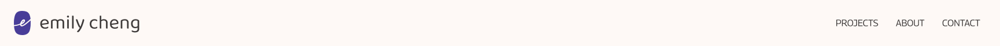

Navigation Bar
The navigation bar allows users to navigate through the different pages of the website.
Example

<nav class="navbar navbar-expand-lg nav-bar-color sticky-top">
<div class="container-fluid">
<a class="navbar-brand p-2" href="#">
<img src="../images/logo_color.jpg" alt="Emily Cheng indigo logo">
emily cheng
</a>
<button class="navbar-toggler" type="button" data-bs-toggle="collapse" data-bs-target="#navbarNavDropdown"
aria-controls="navbarNavDropdown" aria-expanded="false" aria-label="Toggle navigation">
<span class="navbar-toggler-icon"></span>
</button>
<div class="collapse navbar-collapse justify-content-end" id="navbarNavDropdown">
<ul class="navbar-nav">
<li class="nav-item">
<a class="nav-link active nav-highlight" aria-current="page" href="#">Projects</a>
</li>
<li class="nav-item">
<a class="nav-link" href="about.html">About</a>
</li>
<li class="nav-item">
<a class="nav-link" href="contact.html">Contact</a>
</li>
</ul>
</div>
</div>
</nav>
Usage
- The navigation bar is used on all pages, all sizes
- The navigation links are consistently on all pages and in the same order.
- The navigation bar stays at the top of the viewport (it is "sticky").
- The navigation logo and name are linked to the homepage.
Accessibility Considerations
- The navigation bars use dark text that contrast with the light background, meeting the WCAG color contrast requirement.
- Both the logo and name are clickable, making the surface area large enough to activate them without trouble.